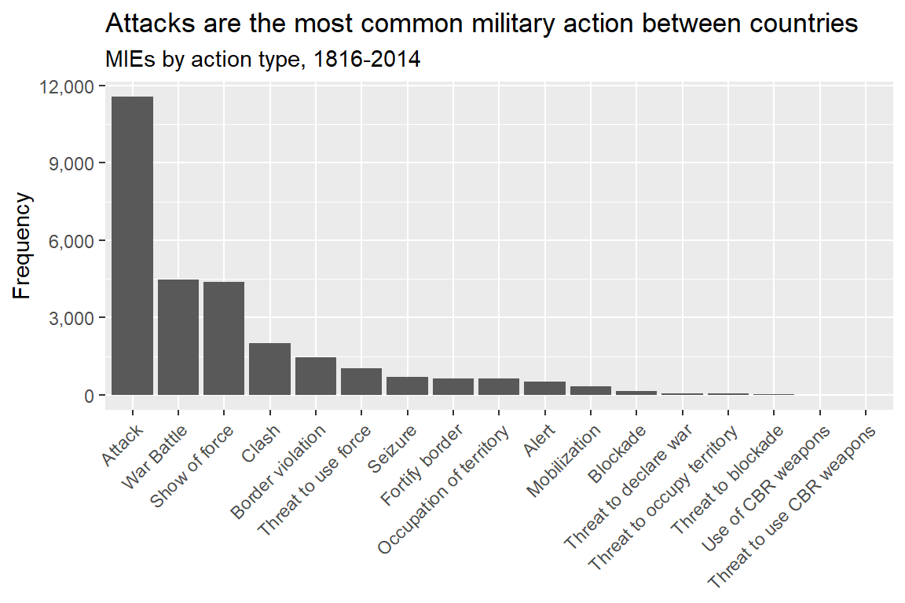
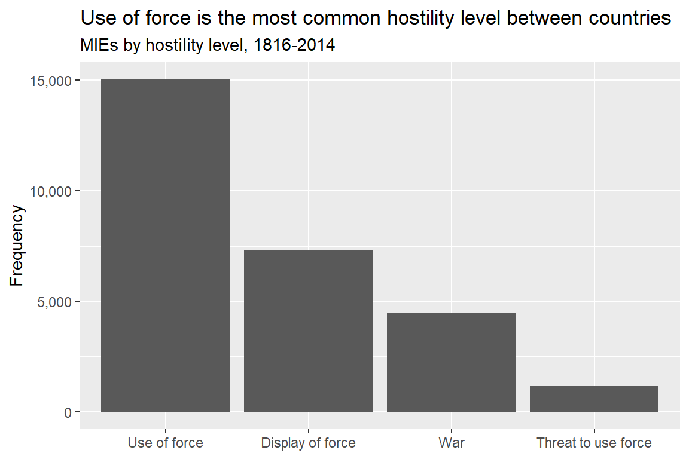
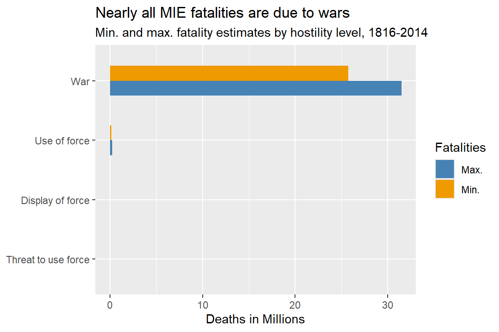
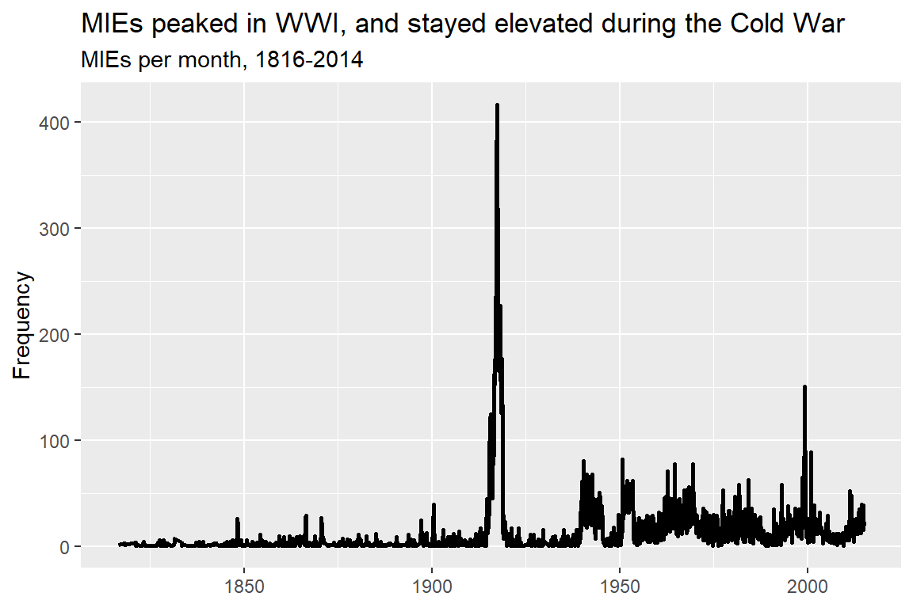

## open {tidyverse}
library(tidyverse)
## read in data and save as 'dt'
read_csv(
"https://raw.githubusercontent.com/milesdwilliams15/foreign-figures/refs/heads/main/_data/mie-1.0.csv"
) -> dt2 The Data
Main ideas:
The Militarized Interstate Disputes (MID) dataset has supported decades of peace science research on international conflict.
But a dispute over its quality in the last decade spurred the creation of a an alternative set of data: jointly, Militarized Interstate Events (MIEs) and Militarized Interstate Confrontations (MICs).
We’ll use the latter (MIEs in particular) in this course given its purported quality and high level of granular detail.
Once you download the data, you can see it has lots of useful information, which we’ll spend some time exploring.
2.1 Nothing Good Lasts Forever
In the last chapter I talked about war, how it’s defined, and how it’s measured. I also ended that chapter by noting a controversy that arose about the most commonly used conflict dataset available for studying international conflict: The Militarized Interstate Dispute (MID) dataset maintained by the Correlates of War Project (COW).
MIDs are ubiquitous in conflict research, so when a group of scholars come along and say the data is unreliable for vast stretches of time (every year from 1816 to 2002 to be exact), that creates a stir. It also led to the publication of a series of articles where the competing research teams behind the MID data and the group of discontents duked it out. Many of the articles in the exchange were published in the journal International Studies Quarterly, one of the top journals in the field of international relations.
The most significant development to come out of this back-and-forth was the creation of novel datasets by the group of scholars that raised concerns about MIDs. In a pair of articles, the political scientists Douglas Gibler and Steve Miller (2024a, 2024b) introduced the Militarized Interstate Confrontations (MIC) dataset and the Militarized Interstate Events (MIE) dataset. The former is actually an aggregated version of the latter: MIEs are embedded in larger MICs.
The rationale for these new datasets is summarized pretty well in the codebook (a manual about what’s in the dataset) for MICs:
We found an overwhelming number of errors in the original [MID] data and corrected those data, providing all of our suggested changes to the CoWMID Project dataset hosts. However, after more than nine years of communications with CoWMID and several exchanges in International Studies Quarterly, it is apparent that CoWMID admits their pre-2002 data is incredibly error-prone but that they have neither the resources nor inclination to fix those thousands of admitted errors. Therefore, we are introducing the Militarized Interstate Confrontation (MICs) data, which are based on proper use of MID coding rules and include numerous advancements in both information and presentation.
While the MIE and MIC datasets include some innovations in the way events are coded, and what information is either included or excluded from the data, both datasets are premised on the foundational ideas behind the concept of MIDs crystallized by Jones, Bremer, and Singer (1996), along with updates made by subsequent iterations of the COW MID project.
In short, Gibler and Miller didn’t try to measure a new concept; they tried to measure an old concept better.
That doesn’t mean they didn’t innovate. One of the most important updates Gibler and Miller made was to keep wars in the data. Recall from the last chapter that MIDs are considered threats, shows, or uses of force between countries short of war. Once a conflict escalates to a war, this is noted in the data and then everything from there on out is dropped. Gibler and Miller decided to keep conflicts in the data, even after they escalate to a war. This is why their main aggregate dataset is called the Militarized Interstate Confrontations dataset instead of Militarized Interstate Disputes. They wanted to signal that they aren’t sticking to the original criteria for disputes (events short of war). Instead, they’re capturing everything short of war, and all-out-war as well.
I think this is a really useful innovation, because if someone wants to study something closer to the original definition of MIDs, they can do that with this data. And if someone wants to just study all-out-wars based on their own fatality threshold, they can use this data to do that, too.
The way that disputes and wars seamlessly line up in the MIC/MIE datasets is, itself, another helpful innovation. One of the oddest features of the COW MID dataset and the COW Wars dataset is that they can’t be easily merged together (ReidSarkees and Wayman 2010). This isn’t good. Remember from the last chapter that the COW Wars dataset uses a 1,000 battle death threshold to mark if a dispute escalates to a war. Unfortunately, the COW Wars and COW MID datasets don’t totally overlap in their death statistics or even cases they consider conflicts. The MIC and MIE datasets, to the contrary, are unified and completely overlap, and they don’t base inclusion on fatality statistics. Instead, they leave it to the researcher to make a judgement call about how to analyze the data, using their own death thresholds or other criteria to study conflicts if that’s what they want to do.
I admit that I don’t really have a dog in this fight, but for practical reasons I favor the MIE/MIC datasets over the COW MID dataset.
First, I like the consistency of all events, ranging from threats to all-out war, being included in one dataset. That makes my life easier because I don’t have to download multiple datasets or toggle between them if I want to study only low-level disputes versus wars.
Second, while I haven’t personally validated either the MID or MIE/MIC datasets, I find the case made by Gibler and Miller in support of their data compelling—for two reasons.
For one, as they noted in the quote I shared above, the folks at COW MID admitted that the errors Gibler and Miller found exist, and they said they don’t plan to fix them. When people with a vested interest in the validity of a dataset own up to the fact that errors others found were real, that’s telling, and then when they say they don’t plan to do anything about it, that’s frustrating.
Also, while this isn’t the most scientifically valid justification, I find it hard to believe that Gibler and Miller would have bothered to get a National Science Foundation grant, put together a research team, and engage in the tedious and lengthy process of reconstructing a dataset that purports to capture every single conflict that has taken place between countries from 1816 to 2014 just to win an argument when a good-enough dataset already exists. This seems like the work of sincere researchers who want to make sure fellow peace scientists have the best data possible for doing their work, and who feel like the community of conflict researchers is being let down by current resources.
For these reasons, we will use the Gibler and Miller data in this class. In particular, we’ll use the MIE dataset since the MIC dataset is just an aggregated version of its MIE counterpart.
Speaking of which, let me introduce you to the MIE dataset and give you a tour of what it has to offer.
2.2 The Militarized Interstate Events Dataset
First, some background. The Militarized Interstate Events (MIE) dataset and its Militarized Interstate Confrontations (MIC) counterpart were created as a part of the International Conflict Data Project hosted at the University of Alabama. (COW MID also is hosted by a university, previously by the University of Michigan, and now by Penn State.)
When you go to the download page for the data, you’ll see that multiple datasets are hosted on the site (you can check that out here). In addition to the MIE and MIC datasets, there are: Militarized Interstate Participants, Militarized Interstate Confrontation Endings, Militarized Interstate Confrontation Names (useful if you want to know the historical names of many conflicts that escalated to wars), Protest-Dependent Militarized Interstate Disputes, and Formal War Declarations (which is treated as a separate action from fighting, since declaring war is technically a distinct political behavior from actually going to war).
There’s a lot of rich material to draw on here for studying international conflict. Some datasets are just useful summaries of MIE, while others, like the endings dataset or confrontation names dataset provide additional information. For someone like me, it’s very easy to spend hours poking around all the files.
But, I have some things to teach you, and you probably want to get a move on, so let me show you the relevant stuff you need to know about the MIE dataset.
First, here’s a screenshot of what the download page looks like focusing just on the MIE dataset:

You can see there are four tabs associated with the dataset:
The codebook (basically, the manual for the dataset)
A link to the article Gibler and Miller published about the data
Some bare-bones summary statistics about what’s in the data
A link that will download the data in a zip file to your computer
Don’t worry about the last one because I did you a solid and downloaded the data myself and then saved it on my GitHub. This will make it possible for you to read the data into your software (R) directly from online without having to deal with downloading and storing it permanently on your computer.
Before we get to that step though, I think it’s a good idea to just look at the information on offer in the dataset. I’ve copied below the relevant details from the MIE codebook. Each bullet point tells you the name of a column in the dataset and what it represents.
micnum: The Militarized Interstate Confrontation (MIC) number for each case. If the event is part of a Militarized Interstate Dispute (MID) originally coded by CoW, we use that number. Note that we have also added numerous confrontation cases that are not in the CoWMID data as events or disputes. These cases begin with micnum values in the 9000’s to demonstrate completely new cases.eventnum: This is the individual event number within the confrontation. Note that these numbers are meaningful. An event number value of “1” denotes the first threat, display, or use of force in that particular confrontation. The highest event number is the last onset of a threat, display, or use of force that confrontation—previous events may still last longer and cause the duration of the confrontation to extend. A large number of events have missing start and/or end dates. We researched the cases in which the missing-day event could be the first or last participation of the state in the confrontation and confirmed the temporal placement of the missing-day event using a meaningful event number. We have not yet sequentially ordered the missing-day events that could not have been first or last events, but we hope to add that feature soon.ccode1: This is the CoW country code for the state. ccode2: This is the CoW country code for the state that was targeted by a threat, display, or use of force. In clashes, the higher number ccode is ccode2.stmon: The start month of the event, with values ranging from 1 to 12. There are no missing month values; if the month of a militarized action could not be determined, the action was not coded.stday: The start day of the event, with values ranging from 1 to 31 and missing days reported as values of -9. We have done our best to appeal to the historical record to eliminate missing days in the data, but there are numerous cases where only the month of the militarized action is known.styear: The start year of the event, with values ranging from 1946 to 2014. There are no missing year values; if the year of a militarized action could not be determined, the action was not coded.endmon: The end month of the event, with values ranging from 1 to 12. There are no missing end month values.endday: The end day of the event, with values ranging from 1 to 31 and missing days reported as -9. Again, we have done our best to appeal to the historical record to eliminate missing days in the data, but there are numerous cases where only the end month of the militarized action is known.endyear: The end year of the event, with values ranging from 1946 to 2014.sidea: Side A in the confrontation is defined by whichever state initiated the first militarized action in the confrontation. All states coordinating with the original Side A state are also considered members of Side A. The variable is dichotomous, with a “1” indicating Side A and “0” indicating Side B. Reciprocated confrontations will have one or more actions by states with a Side A value of “0”.action: The type of action ccode1 targeted ccode2 with in the event. Possible values [withhostlevin brackets] include the following: 0 No militarized action [1] 1 Threat to use force [2], 2 Threat to blockade [2], 3 Threat to occupy territory [2], 4 Threat to declare war [2], 5 Threat to use CBR weapons [2], 6 Threat to join war, 7 Show of force [3], 8 Alert [3], 9 Nuclear alert [3], 10 Mobilization [3], 11 Fortify border [3], 12 Border violation [3], 13 Blockade [4], 14 Occupation of territory [4], 15 Seizure [4], 16 Attack [4], 17 Clash [4], 19 Use of CBR weapons [4], and 22 War Battle [5]. Note that this scale is actually not ordinal. See above for a discussion of how we changed how wars are coded, and see the last section for additional notes on wars and battles.hostlev: The hostility level of the event. Possible values include the following: 1 No militarized action, 2 Threat to use force, 3 Display of force, 4 Use of force, and 5 War.fatalmin1: This is an estimate of the minimum number of military battle-deaths for ccode1 in the event.fatalmax1: This is an estimate of the maximum number of military battle-deaths for ccode1 in the event.fatalmin2: This is an estimate of the minimum number of military battle-deaths for ccode2 in the event.fatalmax2: This is an estimate of the maximum number of military battle-deaths for ccode2 in the event.version: The MIE version number. We are constantly reviewing and updating our datasets, and we ask users of our data to always report which version number of the data they are using in their research.
This is a lot of detail to take in, buut once you have a moment to absorb the information, it boils down to a few key things: identifiers for confrontations and events, identifiers for the country on either side of the event (where the country on side 1 is responsible for engaging in an action against side 2), information about the timing of the event, a classification for what kind of action took place, a classification for how severe the action was, and information about how many people died on each side.
There’s enough here that a person can write a lengthy report based solely on what’s in this dataset (which you’ll do at the end of Part I of this class).
To do that, however, you first need to get the data into your software, and clean it up a bit to make it useful for analysis, which I’ll show you how to do in the next section.
2.3 Accessing and Cleaning the Data
Data analysis is impossible without specialized tools, and for the time being the most ubiquitous tool in the political scientist’s (and peace scientist’s) toolkit is the R programming language and the RStudio IDE (integrated development environment). I’m a political scientist, and I don’t drift too far from the herd. I’ve been using R for more than a decade now.
I can tell you from personal experience that R has its shortcomings, but I’m with the computer scientist Clause Wilke in saying R is among the best programming languages for data science. More importantly, it’s probably one of the best languages for doing statistical analysis and data visualization, which is what most social scientists need to use it for.
Going one step further, as you’ll see in Part II of the book, Steve Miller (one of the people responsible for the MIE dataset) created an R package specifically designed to make creating datasets for doing peace science in R easier. This package is going to be a real time-saver when we start incorporating a bunch of different variables into our conflict data to assess which factors predict patterns in international conflict. This package will also help out immensely in the next two chapters when we start visualizing trends in conflict occurrence and deadliness.
But all that in due time. Let me start by showing you how to get the data.
First, you need to make sure you’re in RStudio. If your a Denison student, you can access RStudio remotely by going to r.denison.edu, where you can sign in using your Denison credentials. You can also install the software directly to your computer. Just follow these instructions here.
Second, I recommend opening a Quarto file (.qmd) which will give you a single document where you can write in plain text and write and run code. To do this, just go the “File” tab, then “New File,” and then select “Quarto Document.”
Because my goal in this class is to focus on doing peace science research rather than introducing you to all the basics of using R and navigating RStudio, I’m going to proceed with the naive assumption that you have some background in using these tools.
However, if you don’t have this background, all is not lost. Because I have a habit of making textbooks (glorified lecture notes) for all the technical classes I teach, I have written a bunch of guides already about R and RStudio, like this one called “R Basics.” If you need some help getting up to speed, I recommend checking this out, and I strongly recommend visiting me during office hours. I’ll do my best to coach you up.
One more thing, for those not familiar with R. If you follow along with the code I’ll show you for accessing the data and cleaning in up, I think you’ll quickly get a sense for how the language works.
2.3.1 Reading the Data into R
The first step in any data analysis task is to access the data you need. In this case, this step is pretty easy, both because a clean dataset already exists, and because I have saved that dataset in a format that makes it possible to read it directly into your computer using some simple R code. I’ve done so below.
The MIE dataset exists as a CSV file on my GitHub, so I need to give my computer (or if you’re using the cloud-based version of RStudio, the server you have remote access to) the location of the file online and instructions to download its contents into its working memory. The below R code allows me to talk to my computer (or the server) to tell it what to do. (This, by the way, is the proper way to think about what R is doing: it’s a language that lets you interface directly with your computer, or a remote server, to give it explicit instructions about what to do.)
The first thing I did in the above code is write library(tidyverse). The R language is supported by a vast ecosystem of specialized software packages that allow you to run different kinds of routines (functions) in your R session. The {tidyverse} package is one of the most popular, and it offers more than just a useful set of functions. It supports an entire dialect in the R language. To install it (if you don’t have it already), you can run the following code in the R console: install.packages("tidyverse").
This is the R dialect that I personally speak, and it’s become increasingly popular over time. The reason is that speaking R the “tidyverse” way is meant to improve the human readability of code. In short: to help you be nice to the people who need to read your code at a later point in time. I’ll use this approach to coding throughout most of the examples in this book.
Once I opened the {tidyverse}, I then ran the following code:
read_csv(
"https://raw.githubusercontent.com/milesdwilliams15/foreign-figures/refs/heads/main/_data/mie-1.0.csv"
) -> dtread_csv() is a function (a thing that has instructions for a particular routine for your computer to run) that reads a CSV file into your computer’s working memory saved at whatever location you tell it to go look. In this case, I gave it the url to the raw CSV file saved on my GitHub. Note that I made sure this url was in quotation marks (““). This is important for locating files in R.
Note, too, that after I closed the parentheses of the read_csv function around the url (and this is also important: make sure you close parentheses), I wrote -> dt. In R-speak, this means I assigned the content of the CSV file to be saved as an object called dt. The arrow is what lets me assign names, and its direction controls what output gets saved with what name. Because the arrow is pointing away from read_csv() to dt, my computer gets the message that I want it to read a CSV file into its working memory and use “dt” as shorthand for anytime I want to tell it to do something else with this data.
This step is crucial. If I don’t save the data as an object, my computer will just read the contents of the CSV file and report them back to me, which isn’t helpful. Below, you can see what happens when I don’t assign the output to an object and just run the function. Underneath the code you can see a snippet of the output. I told my computer to read in the content of the MIE dataset, and then it just read its contents back to me. Because it isn’t saved as an object, I now have no way to refer back to it (except by just re-running the read_csv function every time I need the data, which is just painful).
read_csv(
"https://raw.githubusercontent.com/milesdwilliams15/foreign-figures/refs/heads/main/_data/mie-1.0.csv"
) # A tibble: 28,011 × 18
micnum eventnum ccode1 ccode2 stmon stday styear endmon endday endyear sidea1
<dbl> <dbl> <dbl> <dbl> <dbl> <dbl> <dbl> <dbl> <dbl> <dbl> <dbl>
1 2 1 2 200 5 -9 1902 5 -9 1902 1
2 3 1 300 345 10 7 1913 10 7 1913 1
3 4 2 339 200 5 15 1946 5 15 1946 1
4 4 3 200 339 10 22 1946 10 22 1946 0
5 4 4 200 339 10 22 1946 10 22 1946 0
6 4 5 200 339 10 22 1946 10 22 1946 0
7 4 6 339 200 10 22 1946 10 22 1946 1
8 4 7 200 339 10 23 1946 10 23 1946 0
9 4 8 200 339 11 1 1946 11 1 1946 0
10 4 9 339 200 11 1 1946 11 1 1946 1
# ℹ 28,001 more rows
# ℹ 7 more variables: action <dbl>, hostlev <dbl>, fatalmin1 <dbl>,
# fatalmax1 <dbl>, fatalmin2 <dbl>, fatalmax2 <dbl>, version <chr>If you’re new to the R language, I think the exercise of reading some data into your computer is instructive. There are things called R packages that have useful functions you can use. Functions serve as short-hand for telling your computer to run specialized routines (like accessing data). If you want to save the output of functions, you need to assign their content a name (make it an object, in R-speak), otherwise you’ll have to run the function again anytime you need to do anything with its output.
If you can wrap your head around this simple framework, then I think you’ll be surprised about how well you pick up coding in the R language.
2.3.2 Cleaning the Data
Compared to many real-life datasets, the MIE dataset is in great shape. First of all, it’s tidy, which isn’t synonymous with “clean.” Tidy is a technical term used to describe a dataset where:
- Each row is one observation.
- Each column is one variable.
- Each data entry per row and column is one value.
The MIE dataset ticks these boxes. But what, exactly, is an observation in the dataset?
According to the MIE codebook, each row is a unique militarized event that took place between a pair of countries. The below code will let me look at just the first few rows of data. Take a look at the output.
slice_head(dt, n = 5)# A tibble: 5 × 18
micnum eventnum ccode1 ccode2 stmon stday styear endmon endday endyear sidea1
<dbl> <dbl> <dbl> <dbl> <dbl> <dbl> <dbl> <dbl> <dbl> <dbl> <dbl>
1 2 1 2 200 5 -9 1902 5 -9 1902 1
2 3 1 300 345 10 7 1913 10 7 1913 1
3 4 2 339 200 5 15 1946 5 15 1946 1
4 4 3 200 339 10 22 1946 10 22 1946 0
5 4 4 200 339 10 22 1946 10 22 1946 0
# ℹ 7 more variables: action <dbl>, hostlev <dbl>, fatalmin1 <dbl>,
# fatalmax1 <dbl>, fatalmin2 <dbl>, fatalmax2 <dbl>, version <chr>For each event in the data, there are variables (columns) to help identify the event, indicate which countries were involved, the date it happened, and other details about the kind of military action that took place along with fatality statistics.
Again, in essence, it’s tidy: each row is an observation (event), each column is a variable (a different bit of info about the event), and each row-column entry is a single value.
However, even though the data is tidy, it isn’t fully ready for analysis. Notice that all the variables are numerical (except the version column). For some variables, this is sensible, but not so much for others. For example, the action column is meant to be a set of categories for the kind of militarized action that took place, but it’s all numbers. The same is true for hostlev. These numbers are stand-in numerical codes for categories, and the codebook provides information for what each number represents.
This is a common database management strategy. It’s annoying from the perspective of the analyst, but sensible from the perspective of people who store and manage data. Numerical codes eat up less memory than writing out values in plain English. The MIE dataset is 28,011 rows long. This isn’t exactly “big data,” but it’s big enough that some measures needed to be taken to make the overall data file smaller.
The downside for the analyst is that you have to do some cleaning (or “recoding”) of variables to make them more useful. Fortunately, in a dataset with only 18 columns, this process isn’t too involved. And a nice bonus for you is that I’m about to show you code for cleaning up this data so you don’t have to figure it out from scratch. (And down the road I’m going to give you tools that automate this cleaning process even more, so you can focus on the details of your analysis.)
Alright, here’s the code. It’s a bit more involved than simply reading in data, and I introduced a new kind of operator into the mix called a pipe. This is the |> symbol. This is R-speak for “give this thing to that thing.” Instead of putting an object inside a function to perform a routine on it, the pipe lets you put the object first. Piping is a way to improve the human readability of code. It also is a way to conveniently chain together a succession of operations you want to perform on your data. The below code tells my computer to convert the numerical codes for action and hostlev into their qualitative category names. Then it creates a date column that is a specialized “date class” variable at the year-month level for when each event started (there are missing values for days, so I’m going to just get as precise as months). Finally, it creates a column called year, which is just the event start year (this will help with merging this data with other data down the road). On the tail end of the code I write -> dt which saves the output by writing over the old content saved in dt.
library(socsci)
dt |>
mutate(
action = frcode(
action == 1 ~ "Threat to use force",
action == 2 ~ "Threat to blockade",
action == 3 ~ "Threat to occupy territory",
action == 4 ~ "Threat to declare war",
action == 5 ~ "Threat to use CBR weapons",
action == 6 ~ "Threat to join war",
action == 7 ~ "Show of force",
action == 8 ~ "Alert",
action == 9 ~ "Nuclear alert",
action == 10 ~ "Mobilization",
action == 11 ~ "Fortify border",
action == 12 ~ "Border violation",
action == 13 ~ "Blockade",
action == 14 ~ "Occupation of territory",
action == 15 ~ "Seizure",
action == 16 ~ "Attack",
action == 17 ~ "Clash",
action == 19 ~ "Use of CBR weapons",
action == 22 ~ "War Battle"
),
hostlev = frcode(
hostlev == 2 ~ "Threat to use force",
hostlev == 3 ~ "Display of force",
hostlev == 4 ~ "Use of force",
hostlev == 5 ~ "War"
),
date = ym(paste0(styear, "-", stmon)),
year = styear
) -> dtOne more thing: I started the code by telling my computer to pull out some tools from a package called {socsci}. Remember, packages contain groups of functions (specialized routines). In this case, I want to use a function called frcode() to help me turn numerical codes into qualitative categories, and this function isn’t already in {tidyverse}. To install {socsci}, you’ll need to run the following code:
install.packages("devtools")
devtools::install_github("ryanburge/socsci")2.3.3 Some Simple Descriptive Summaries
Now that I have some cleaned up data, I can use R to tell my computer to do various summaries with the data. For example, I can ask it how many rows are in the data, which will also be a summary of how many unique militarized interstate events (MIEs) took place since each row is a unique event. I can do this by running the function nrow() on dt. According to the output, the answer is 28,011.
nrow(dt)[1] 28011I can also ask what time span the data covers. I can do this by running the range() function specifically on the date variable, which I can pull out of dt using a dollar sign ($). The first documented MIE took place in July of 1816, and the last happened in December of 2014.
range(dt$date)[1] "1816-07-01" "2014-12-01"I now can say something really important to know about MIEs. According to the dataset, 28,011 is the number of times that one country threatened to use force, showed force, used force, or did battle in a war with another country between 1816 and 2014 (a nearly 2 century-long period). In absolute terms, that seems like an awful lot of conflict (or the potential for it).
I can also ask my computer (through R) to perform even more detailed summaries. For example, I can ask how common different kinds of military actions took place, and order them by their frequency from highest to lowest. The below code will do just that, and as an added bonus, the ct() function that I use below (which comes from {socsci}) will also return proportions.
dt |>
ct(action) |>
arrange(desc(n))# A tibble: 17 × 3
action n pct
<fct> <int> <dbl>
1 Attack 11562 0.413
2 War Battle 4471 0.16
3 Show of force 4376 0.156
4 Clash 2007 0.072
5 Border violation 1454 0.052
6 Threat to use force 1021 0.036
7 Seizure 694 0.025
8 Fortify border 649 0.023
9 Occupation of territory 643 0.023
10 Alert 504 0.018
11 Mobilization 327 0.012
12 Blockade 148 0.005
13 Threat to declare war 65 0.002
14 Threat to occupy territory 53 0.002
15 Threat to blockade 31 0.001
16 Use of CBR weapons 5 0
17 Threat to use CBR weapons 1 0 Now I can say some other interesting things about international conflict. First of all, the most common type of MIE is an attack. From 1816 to 2014 these happened 11,562 times, accounting for more than 41% of all militarized actions by one country against another. The next most common kind of action is battle in an all-out war. From 1816 to 2014, a total of 4,471 war battles took place, accounting for 16% of all militarized actions during this period. Shows of force aren’t far behind.
From there the frequency of events declines rapidly. The three least common kinds of actions are threats to blockade, use of CBR (chemical, biological, and radiological) weapons, and the threat to use CBRs. Only 31 blockade threats took place from 1816 to 2014, accounting for 0.1% of all militarized events. CBR use and threats are vanishingly rare. They were only used by one country against another 5 times (short of war) and only one country ever threatened to use them against another. With rounding error, these actions accounted for 0% of all events.
I can also ask my computer questions about the intensity of conflict. Each of the types of military actions is recorded in the MIE dataset as meeting different thresholds for intensity. These intensities are documented in the hostlev column in the data. I can run the following code to ask my computer tell me how common these hostility levels are:
dt |>
ct(hostlev) |>
arrange(desc(n))# A tibble: 4 × 3
hostlev n pct
<fct> <int> <dbl>
1 Use of force 15059 0.538
2 Display of force 7310 0.261
3 War 4471 0.16
4 Threat to use force 1171 0.042Use of force (short of war) is the most common kind of event in the data, accounting for nearly 54% of all military actions by one country against another from 1816 to 2014. Displays of force were the second most common, but occur at only half the rate of uses of force. 7,310 displays of force are recorded in the data, and make up 26% of all events. War battles are even less common, with only 4,471 recorded, accounting for 16% of all events. Threats to use force are the least common. 1,171 in total took place from 1816 to 2014, accounting for only 4% of all events.
I can notch up the complexity of the summaries I ask for yet again. The data also has information about battle deaths. I can write R code that will tell my computer to summarize the minimum and maximum estimated fatalities from different kinds of events based on hostility level:
dt |>
group_by(hostlev) |>
summarize(
fatalmin = sum(fatalmin1 + fatalmin2),
fatalmax = sum(fatalmax1 + fatalmax2)
) |>
ungroup() |>
mutate(
minpct = fatalmin / sum(fatalmin),
maxpct = fatalmax / sum(fatalmax)
) |>
arrange(desc(fatalmin))# A tibble: 4 × 5
hostlev fatalmin fatalmax minpct maxpct
<fct> <dbl> <dbl> <dbl> <dbl>
1 War 25737608 31477327 0.994 0.993
2 Use of force 163900 235873 0.00633 0.00744
3 Threat to use force 0 0 0 0
4 Display of force 0 0 0 0 This summary offers some really eye-catching headline figures. First of all, wars account for the greatest share of battlefield deaths from MIEs. This fact alone isn’t surprising, but the disparity is. A low-end estimate of how many people died in MIEs that were battles in a war from 1816 to 2014 is 25.7 million. The high-end estimate is 31.5 million. Both of those figures in absolute terms are staggering, but they are in relative terms, too. Both the low- and high-end estimates account for more than 99% of all battle-related deaths from international conflicts over a two-century period.
Uses of force short of war can still deadly though. While making up less than a percentage point of all battle-related deaths from MIEs, in absolute terms the totals are still large. On the low-end, 163,900 deaths from 1816 to 2014 can be attributed to uses of force short of war between countries. On the high-end, the figure is 235,873.
Threats and displays of force aren’t deadly at all, which isn’t a big shock. Neither involves using actual military force. Therefore, they aren’t fatal.
2.3.4 Making Some Graphs of Data Summaries
Another thing you can do with your data is make graphs of your summaries. This process is called data visualization, and it involves taking tabular data or data summaries and representing them using geometry, colors, and other graphics.
The R programming language is a great way to interface directly with your computer to get it to produce nice looking graphs. The {tidyverse} way to do this is with {ggplot2}, which is in the universe of packages supported by {tidyverse}. That means you can start using its functions once you’ve written and run library(tidyverse).
I’m not going to get too bogged down in the details of data visualization here. But if you want to know the whole range of things you can do in terms of data visualization, you can check out some brief lecture notes I’ve written for my 200-level class on research design, or more detailed notes I’ve written for a 100-level class I teach on data visualization.
I won’t have you do anything too fancy with data visualization in this class, so don’t think you need to master everything there is to know. I’ll provide you with plenty of examples that you can borrow from and build on throughout this book.
Speaking of examples, it might be nice to have some decent looking graphs of the summaries I showed you in the previous section. Since these examples just involved counting things up, a nice data visualization choice is a simple bar/column plot. These let you summarize how some quantity of interest differs across different qualitative categories.
Here’s how I might make such a plot using the summary for militarized actions:
dt |>
ct(action) |>
ggplot() +
aes(x = reorder(action, -n), y = n) +
geom_col() +
labs(
title = "Attacks are the most common military action between countries",
subtitle = "MIEs by action type, 1816-2014",
x = NULL,
y = "Frequency"
) +
scale_y_continuous(
labels = scales::comma
) +
theme(
axis.text.x = element_text(
angle = 45, hjust = 1
)
)
Here’s another one for hostility level:
dt |>
ct(hostlev) |>
ggplot() +
aes(x = reorder(hostlev, -n), y = n) +
geom_col() +
labs(
title = "Use of force is the most common hostility level between countries",
subtitle = "MIEs by hostility level, 1816-2014",
x = NULL,
y = "Frequency"
) +
scale_y_continuous(
labels = scales::comma
) 
Finally, I can use a bar chart to show fatalities by hostility level:
dt |>
group_by(hostlev) |>
summarize(
fatalmin = sum(fatalmin1 + fatalmin2),
fatalmax = sum(fatalmax1 + fatalmax2)
) |>
ungroup() |>
mutate(
minpct = fatalmin / sum(fatalmin),
maxpct = fatalmax / sum(fatalmax)
) |>
pivot_longer(
fatalmin:fatalmax,
names_to = "minmax",
values_to = "fatal"
) |>
ggplot() +
aes(x = fatal, y = hostlev, fill = minmax) +
geom_col(
width = .5,
position = "dodge"
) +
labs(
title = "Nearly all MIE fatalities are due to wars",
subtitle = "Min. and max. fatality estimates by hostility level, 1816-2014",
x = "Deaths in Millions",
y = NULL,
fill = "Fatalities"
) +
scale_x_continuous(
labels = ~ scales::comma(.x / 1e06)
) +
scale_fill_manual(
values = c("steelblue", "orange2"),
labels = c("Max.", "Min.")
)
One more graph you can put together, which provides a nice segue to the next chapter, is to summarize the number of events by the date column in the dataset and then show the results using a line plot. Line plots are a good way to show how some quantity varies over time. The below code shows you one way to do this. The results offer two interesting bits of trivia. First, World War I witnessed the highest number of unique militarized events per month than any other period of time from 1816 to 2014 (far more than even World War II). Second, the monthly frequency of events during the Cold War was elevated compared to previous periods, suggesting a higher baseline level of conflict relative to the previous century.
dt |>
ct(date) |>
ggplot() +
aes(x = date, y = n) +
geom_line(linewidth = 1) +
labs(
title = "MIEs peaked in WWI, and stayed elevated during the Cold War",
subtitle = "MIEs per month, 1816-2014",
x = NULL,
y = "Frequency"
)
In the coming chapters I’ll talk more about measuring conflict occurrence and deadliness over time, and I’ll use ggplot to show these trends. As I said before, I’ll also provide you with plenty of examples that you can build on to suit your goals.
2.4 Summary
The Militarized Interstate Events (MIE) dataset is going to serve as the foundation for all subsequent analysis we do in this class. This is a high quality dataset that ostensibly corrects thousands of documented errors in other commonly used datasets by peace scientists (such as the COW MID dataset) and offers some helpful innovations (like keeping events in the data even after escalation to war).
I provided some helpful code for accessing the data, cleaning it, and doing some interesting data summaries. In the chapters that come, I’ll provide you with additional resources that help to automate the process of accessing and cleaning the data so you can spend more time thinking about analysis choices and what the data actually says.